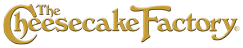

대표 로고대표 브랜드 마크
대표 로고대표 브랜드 마크더 치즈케이크 팩토리 The Cheesecake Factory
더 치즈케이크 팩토리(The Cheesecake Factory)는 1978년 미국 캘리포니아주 베벌리힐스에서 데이비드 M. 오버턴이 설립한 미국의 프랜차이즈 식당이다. 나스닥에 상장된 기업이다.
최종 업데이트
더 치즈케이크 팩토리는 어떤 브랜드인가
더 치즈케이크 팩토리는 미국의 프랜차이즈 식당이다. 미국 34개 주와 워싱턴 D.C.에 치즈케이크 팩토리라는 이름으로 148개 점포가 있다.
메뉴는 스테이크와 버거, 파스타, 샐러드, 35가지 치즈케이크 맛의 디저트 등으로 구성된다. 그랜드 럭스 카페(Grand Lux Cafe)라는 이름으로 13개, 락슈가 팬 에이션 마켓(RockSugar Pan Asian Kitchen)이라는 이름으로 한 개의 점포도 운영한다.
나스닥 상장 기업이며 2008년 기준 회사의 총 수입은 16억 달러에 이른다. 미국 시트콤 《빅뱅 이론》의 등장인물 페니가 직원으로 일하는 곳으로 많이 알려져 있다.
더 치즈케이크 팩토리는 어떻게 시작되고 성장했나
1978년 캘리포니아주 베벌리힐스에서 데이비드 M. 오버턴(David M.
Overton)이 설립했다. 이후 나스닥에 상장한 기업으로 성장했으며, 2008년 기준 회사의 총 수입은 16억 달러에 이르렀다.
미국 시트콤 《빅뱅 이론》에서 등장인물 페니가 일하는 곳으로 알려지면서 대중에게도 널리 알려졌다. 2020년 3월 18일 오버튼은 코로나19로 인한 상당한 재정적 손실 때문에 4월 임대료를 지불할 수 없지만 가능한 한 빨리 지불을 재개하겠다고 밝혔다.
또한 팬데믹 이후 레스토랑을 재개장하겠다고 밝혔다.
더 치즈케이크 팩토리의 브랜드 아이덴티티는 무엇인가
35가지 치즈케이크 맛과 250개 이상의 메뉴를 모두 주문 후 처음부터 만드는 미국의 프랜차이즈 식당으로, 고칼로리 메뉴로도 자주 언급된다.
더 치즈케이크 팩토리의 대표 제품과 서비스는 무엇인가
식사 메뉴에는 스테이크, 갈비 요리, 버거, 닭고기, 해산물, 샌드위치, 파스타, 수프, 다양한 요리의 샐러드가 포함된다. 샐러드, 버거, 샌드위치, 작은 접시 등을 포함한 저칼로리 메뉴도 제공하며, 브런치 메뉴는 토요일과 일요일에 팬케이크, 와플, 프렌치 토스트, 계란을 낸다.
디저트 메뉴에는 35가지 치즈케이크 맛과 케이크, 밀크셰이크, 특선 디저트, 아이스크림 디저트가 있다. 회사 대변인에 따르면 매년 거의 3,500만 조각의 치즈케이크를 판매하며, 250개 이상의 메뉴 항목은 모두 주문 후 처음부터 만든다.
더 치즈케이크 팩토리는 지금 어떤 상태인가
미국 34개 주와 워싱턴 D.C.에서 148개 점포를 운영하며, 그랜드 럭스 카페 13개와 락슈가 팬 에이션 마켓 한 개 점포도 갖고 있다. 고칼로리·고지방 음식이 많고 건강에 좋은 메뉴 옵션이 부족하다는 비판을 받아 2010년 Men's Health 잡지에서 미국 최악의 패밀리 레스토랑으로 선정되었다.
이에 대응해 칵테일, 샐러드, 애피타이저, 레몬 마늘 새우, 연어 구이 등으로 구성한 Skinnylicious 메뉴를 만들었다.
더 치즈케이크 팩토리 로고는 어떻게 변해왔나
대표 로고대표 브랜드 마크
대표 로고 1보관 이미지 1자주 묻는 질문
더 치즈케이크 팩토리는 어느 나라 브랜드인가요?
더 치즈케이크 팩토리는 미국의 식음료 브랜드입니다.
더 치즈케이크 팩토리는 언제 설립되었나요?
더 치즈케이크 팩토리는 1978년 설립되었습니다.
더 치즈케이크 팩토리의 브랜드 아이덴티티는 무엇인가요?
35가지 치즈케이크 맛과 250개 이상의 메뉴를 모두 주문 후 처음부터 만드는 미국의 프랜차이즈 식당으로, 고칼로리 메뉴로도 자주 언급된다.
더 치즈케이크 팩토리의 대표 제품은 무엇인가요?
식사 메뉴에는 스테이크, 갈비 요리, 버거, 닭고기, 해산물, 샌드위치, 파스타, 수프, 다양한 요리의 샐러드가 포함된다.
더 치즈케이크 팩토리는 현재 어떤 상태인가요?
미국 34개 주와 워싱턴 D.C.에서 148개 점포를 운영하며, 그랜드 럭스 카페 13개와 락슈가 팬 에이션 마켓 한 개 점포도 갖고 있다.
더 치즈케이크 팩토리의 창업자는 누구인가요?
더 치즈케이크 팩토리의 창업자는 David M. Overton입니다(위키데이터 기준).
더 치즈케이크 팩토리의 본사는 어디에 있나요?
더 치즈케이크 팩토리의 본사는 칼라바사스에 있습니다(위키데이터 기준).
출처와 검증
더 치즈케이크 팩토리 관련 참고: 공식 웹사이트 · 위키데이터 Q1045842 · 한국어 위키백과 · 영어 위키백과. 브랜드명은 한글과 원어를 함께 표기하되 데이터에 없는 표기는 만들지 않습니다. 기원 국가·설립연도는 검수된 정의문에서 확인된 값을 우선하고, 없을 때만 공식 웹사이트 URL이 일치하는 위키데이터 개체의 값을 씁니다. 웹 첫 보관은 인터넷 아카이브가 공식 사이트 첫 화면을 처음 보관한 날로, 사이트 개설일과 다를 수 있습니다. 위키데이터 값은 2026-11-01 기준입니다.